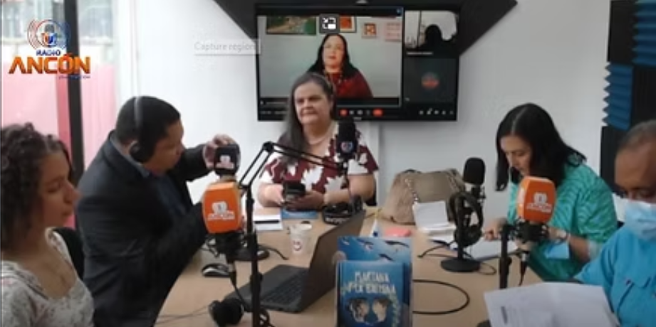
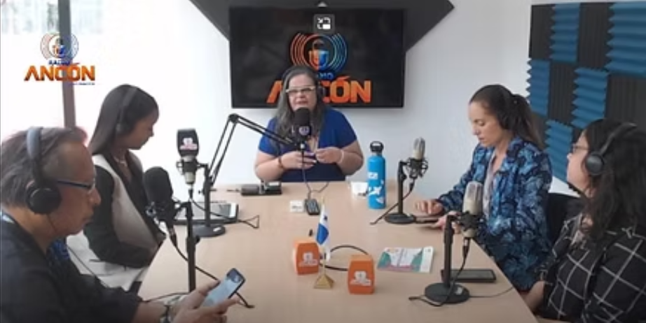
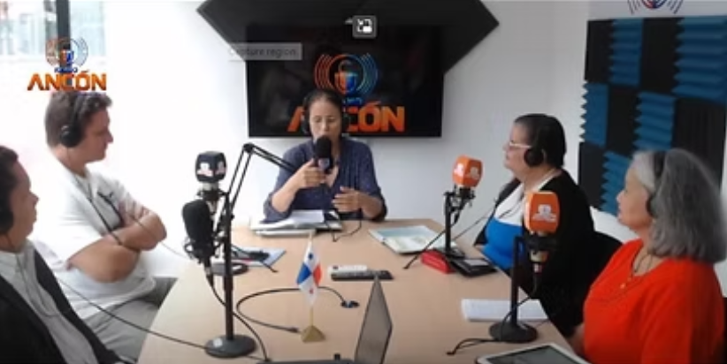
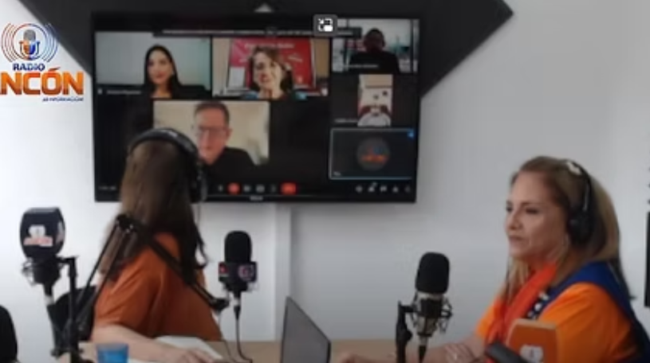
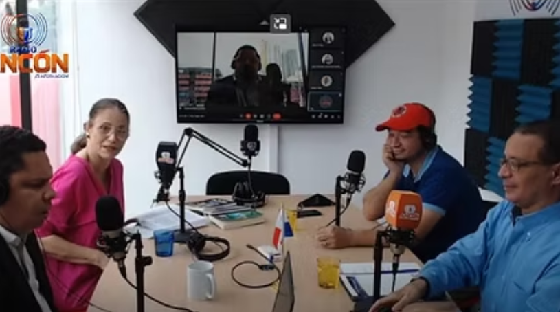
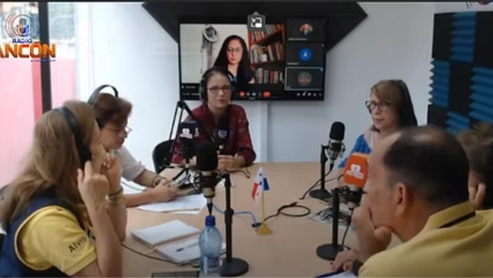

Mes de los océanos
6 de septiembre
Programa especial dedicado a la conservación marina y literatura oceánica.
Ver en YouTube

Contaminación marina
13 de septiembre
Exploramos la problemática ambiental a través de la literatura.
Ver en YouTube

Tortugas
20 de septiembre
Programa sobre la conservación de tortugas marinas en la literatura.
Ver en YouTube

De la literatura infantil a la promoción de la lectura
2 de agosto 2022
Estrategias para fomentar la lectura en niños y jóvenes.
Ver en YouTube

Novela Juvenil y Teatro Infantil
9 de agosto 2022
Explorando géneros literarios para jóvenes lectores.
Ver en YouTube

Alianzas y programas de kiwanis relacionados con la LIJ
19 de julio 2022
Colaboraciones para promover la literatura infantil y juvenil.
Ver en YouTube